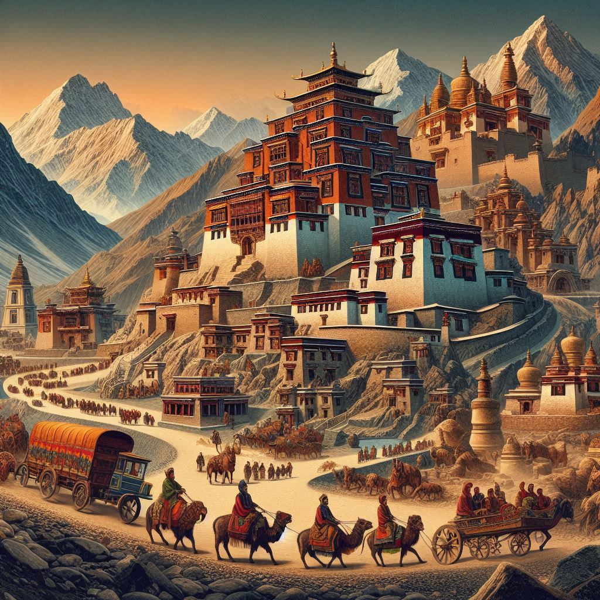
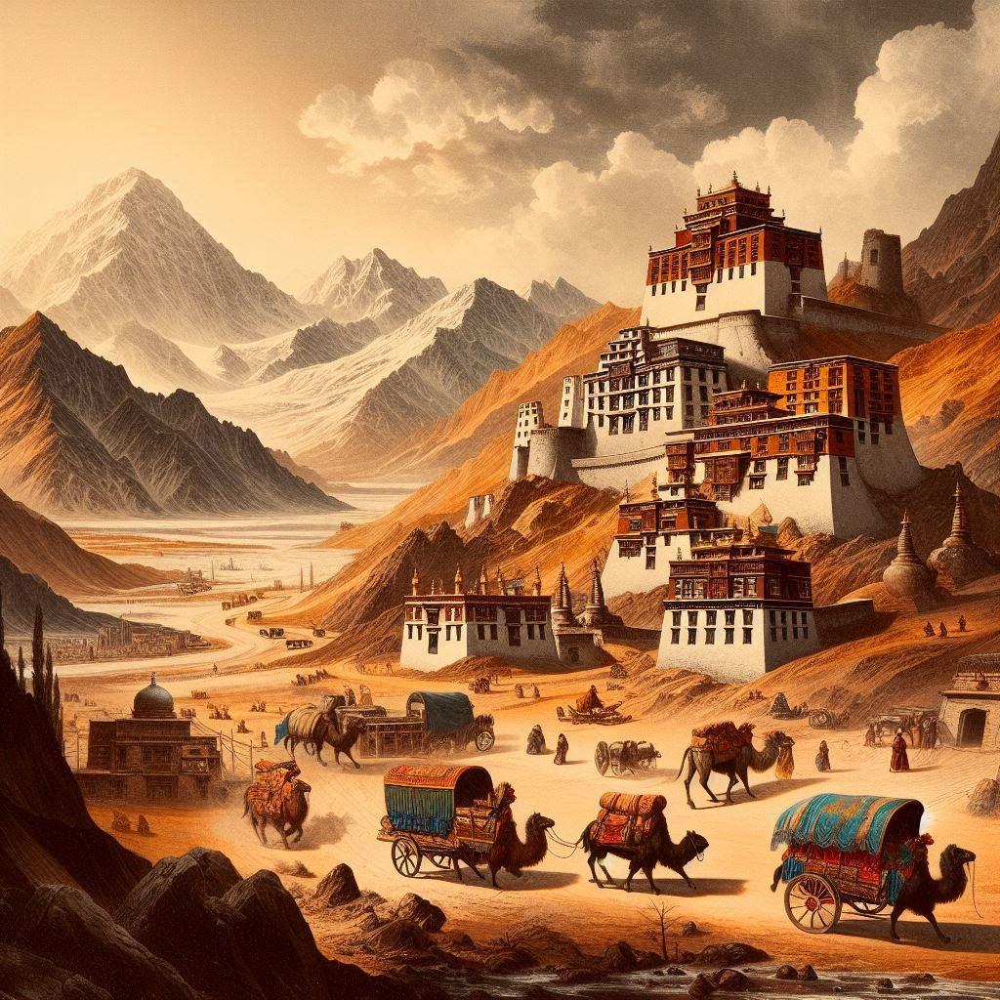

Ladakh has a rich and fascinating history that dates back thousands of years, shaped by its unique geographic location and cultural influences from neighboring regions. The region has been a crossroads of various civilizations, where diverse cultures and religions have blended together, leaving a deep impact on its history, culture, and society.
1. Ancient History:
Ladakh's history is closely tied to the ancient Buddhist culture of the Indian subcontinent. Early evidence suggests that it was once part of the ancient kingdom of Zanskar, which was later integrated into the larger kingdom of Gupta Empire (4th to 6th centuries AD). Over time, Ladakh came under the influence of both Tibetan and Indian cultures due to its location at the crossroads of Central Asia and the Indian subcontinent.
2. Buddhist Influence:
Buddhism reached Ladakh through Tibet, and the region became a prominent center of Tibetan Buddhism. The Buddhist monasteries in Ladakh, such as Hemis Monastery and Thiksey Monastery, were built between the 16th and 17th centuries and have preserved Buddhist traditions. The teachings of Padmasambhava (Guru Rinpoche) and Bodhidharma had a profound influence on the region’s cultural and spiritual landscape.
3. Medieval History:
During the medieval period, Ladakh was a part of several regional kingdoms. It was ruled by local kings, such as the Namgyal dynasty, which came to prominence in the 16th century under King Sengge Namgyal (who reigned from 1560 to 1586). Under Sengge Namgyal, Ladakh expanded its territory and became a well-established independent kingdom. The Namgyal dynasty ruled Ladakh until the 19th century.
Ladakh’s strategic location between India, Tibet, and Central Asia made it an important hub for trade, particularly along the Silk Route. This led to the exchange of goods and ideas, as well as the influence of Central Asian cultures on the region.


4. British and Colonial Era:
In the 19th century, Ladakh's proximity to British India and Tibet drew the attention of the British Empire. After the First Anglo-Afghan War (1839-1842) and the Second Anglo-Sikh War (1848), Ladakh was annexed by the Dogra Kingdom of Jammu and Kashmir in 1846, following a treaty between the British and the Dogras. Ladakh was then administratively a part of Jammu and Kashmir, but its local rulers retained some degree of autonomy.
5. Post-Independence Era:
After India’s independence in 1947, Ladakh became a part of the newly formed Indian Union as a part of the Jammu and Kashmir state. The region became strategically significant during the Indo-Chinese War of 1962, when India and China fought a border conflict over disputed territories, particularly the Aksai Chin area, which lies to the north of Ladakh.
In 1989, the Ladakh Autonomous Hill Development Council (LAHDC) was established to promote self-governance and address the specific needs of the Ladakhi people, particularly in areas of education, development, and culture.
6. Current Situation:
In August 2019, the Indian government revoked Article 370 of the Indian Constitution, which had granted special status to Jammu and Kashmir. Ladakh was separated from Jammu and Kashmir and made a Union Territory of India, directly administered by the central government. This move has had significant political and social implications for the region.
Ladakh remains a region of immense cultural, religious, and ecological diversity. The region continues to face challenges such as political disputes over borders, climate change, and the preservation of its unique cultural heritage. However, it also remains a peaceful, strategic, and beautiful region, attracting tourists, scholars, and adventurers from around the world.
7. Significant Historical Landmarks:
- The Leh Palace: Built in the 17th century, the Leh Palace is an ancient royal palace that overlooks the city of Leh and is an architectural marvel showcasing Ladakhi and Tibetan influences.
- Magnetic Hill: A popular tourist attraction, the Magnetic Hill is known for its optical illusion where vehicles appear to move uphill when left out of gear.
- The Shanti Stupa: Built in 1991, this white-domed structure offers panoramic views of Leh and is a symbol of peace and spiritual enlightenment.
Ladakh's history is deeply intertwined with its religious practices, trade routes, and geopolitical importance, making it one of the most fascinating and unique regions in India.